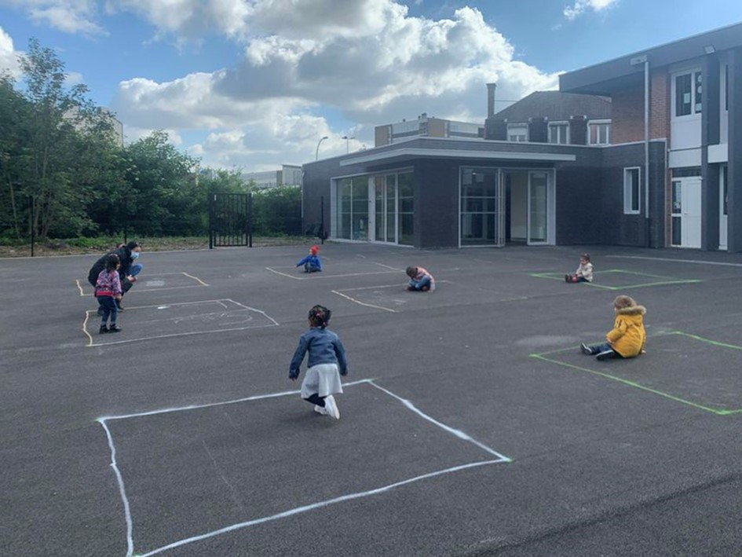

Tandis que le gouvernement français s’acharne sur son peuple en le muselant, en l’obligeant à se masquer, le monde tourne et les bruits de bottes et autres harangues militaires deviennent assourdissants.
Les États-Unis jouent à la provocation en mer de Chine. Les raisons sont économiques et aussi de prédominance militaire. Les USA veulent démontrer que rien ne peut se faire sans eux y compris dans des eaux étrangères en Asie 1.
Le conflit commercial s’aggrave
La Chine, première puissance de la région, en passe de devenir une puissance dominante, cherche à montrer qu’elle n’a pas l’intention se mettre un genou à terre, comme un petit blanc culpabilisé devant un noir qui lui crache dessus. La Chine est très vielle civilisation. Plus vieille que celle des Européens et n’a pas l’intention comme ceux-ci de rendre l’âme et les armes devant la menace de l’islam guerrier d’Erdogan.
La marine chinoise est en passe de devenir aussi puissante à court terme que celle des USA. Elle le fait savoir en diffusant le nombre de bateaux qu’elle construit chaque année. D’ici 10 ans, elle sera la plus forte et des experts comme Mark Esper, avouent que les USA seraient bien en peine de lui tenir tête 2.
La Chine considère que Taïwan fait partie de son territoire et n’accepte pas du tout que Keith Krach, sous-secrétaire d’état américain vienne à Taïpei, si ce n’est que pour féliciter les autorités de Taïwan de sa politique de santé face au Covid-19. Il est sûr que nous ne sommes pas prêts à ce qu’il vienne en France vu la politique désastreuse des baltringues qui nous gouvernent.
Aujourd’hui ce ne sont plus “les morts” du Covid mais “les cas” que l’on assène aux pauvres Français lobotomisés chaque jour par les médias. Il faut être demeuré pour ne pas comprendre qu’en testant des millions de gens, on trouve des milliers “de cas“.
Les cas, ne sont pas des malades, encore moins des mourants loin s’en faut. Un « cas » ce n’est pas la mort, et qu’un cas, ce n’est même pas un malade, encore loin un hospitalisé ou en réanimation. Pourquoi diffuser la panique ?
Certains se posent à peine la question sur les véritables morts du Covid-19, que déjà, on nous balance les chiffres sur les cas, nouvel indicateur de la peur. Pour le gouvernement l’important c’est de terroriser le peuple, en faire un peuple anonyme circulant anonymement dans les rues et ne pouvant pas se réunir, s’amuser, rire ensemble et s’embrasser comme dans cette saloperie de pub qui nous démontre la joie d’un petit-fils privé d’embrasser sa grand-mère en le félicitant. Cet autre pub dénonçant les familles coupables ET responsables d’une mère en réanimation après avoir fêté son anniversaire. Ces publicités sont véritablement à vomir.
Pendant ce temps, la Chine s’arme. La Turquie se fout des rodomontades d’un président français Emmanuel Macron qui paraît-il, serait moqué par ses pairs européens. Il faut dire que la lâcheté des Européens face aux bruits de bottes turcs, rappellent furieusement les lâches que furent Chamberlain et Daladier en 1938. Rien de neuf. La Chine n’aurait pas hésité à claquer le beignet du mahométan comme elle le fait pour les Ouïghours. Avec raison.
Nous retrouvons, comme le dit Éric Zemmour, les vieux réflexes d’antan. Des acteurs primordiaux sont et restent présent sur la grande scène internationale. Sauf l’Europe qui a décidé de se suicider à petit feu.
La grande Russie est bel et bien présente malgré les gesticulations ridicules de l’Union Européenne, ainsi que la Chine et la Turquie ottomane. Les USA dominateurs, depuis la chute du mur de Berlin. Nouvel arrivant, l’Inde. Tous se regardent, s’observent et avancent comme depuis toujours, leurs pions sur un échiquier miné.
La France est à la ramasse, l’Angleterre aussi
Ces deux puissances n’existent que par leurs arsenaux nucléaires, rien de plus ! Ils ne sont plus des puissances dominantes comme autrefois. Ni militaires, ni culturelles, ni industrielles ni technologiques.
Elles vivent sur leurs acquis qui s’étiolent peu à peu sous les coups de butoirs de la mondialisation et surtout de l’islam qui avance sans que rien ne l’arrête sur place. Surtout pas par des députés trop lâches, qui n’ont même pas interdit à une prosélyte voilée de s’assoir à leurs tables.
Bruits de bottes, armement, fusils, missiles, bombes, avion de chasse et autres, et en France, c’est le Covid-19 qui fait la une des journaux. Je pense à cette chanson « Zombie » de Dolores Mary O’Riordan des Cramberries, qui décrit exactement ce que sans doute, nous allons vivre dans les années qui viennent.
Une autre tête se baisse humblement, L’enfant est lentement pris, Et la violence a causé un tel silence, Qui nous trompe ?
Mais tu vois, ce n’est pas moi, Ce n’est pas ma famille,
Dans ta tête, dans ta tête, avec leurs chars et leurs bombes, leurs bombes et leurs armes. Dans ta tête, dans ta tête, ils pleurent,
Dans ta tête, dans ta tête, Zombie, zombie, zombie-ie-ie, Qu’y a-t-il dans ta tête, dans ta tête, Zombie, zombie, zombie-ie-ie, oh.3
(Source)- (En français : https://www.youtube.com/watch?v=LljEOSpLrTA)
De l’autre côté de la planète notre destin se noue car, qui peut imaginer que si la Chine ou les USA s’agressent, les européens seront à l’abri. Pas même la Russie ne le sera, pas même l’Inde, pas même l’Australie.
Mais en France, il parait que le danger premier serait le Covid-19 qui ne tue quasiment plus. Tellement peu du moins. Bien moins que le cancer, nous dit Nicole Delépine. Bien moins que les crises cardiaques, les accidents de voitures et mêmes les noyades.
Le Covid-19 semble bien utile aux crétins qui nous dirigent pour nous asphyxier mentalement et réellement dans les rues de nos villes avec des masques inutiles, au moins dans l’espace public. Ils asphyxient nos enfants dans les classes alors qu’ils ne sont pas, et ne seront pas atteints, et cependant, ces enfants sont en plus, l’objet de profs quasi sadiques qui les laissent s’étouffer, voire s’évanouir dans les classes.
Nous vivons la peur des abrutis qui ont oubliés leurs cerveaux sur la table de nuit. Réveillez-vous.
Partager cette page